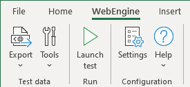

Working with WebEngine Add-in for Excel
In many enterprises, Excel is used a lot to do data related works. Many test teams use it to manage Test Data for manual or Automated Tests. Web Engine Excel Add-in is built to easily manage test data and execute tests on local computer.
The add-in can be used by all team members:
- Testers and Product Owners can define and maintain test data, launch automated tests and observe the execution.
- Test Automation Engineers and Developers can develop and debug the test solution.
Overview

The Excel add-in enables you to:
- Export test data from Excel to xml files.
- Launch test executions.
- Define generation and execution options.
- Generate some piece of code to ease maintenance.
Important
Test automation solution does NOT consume EXCEL format as test data. Instead, Test Data and Environment Variables are always provided in XML format, exported via the Add-in.
Install WebEngine Excel Add-in
Latest version of Excel add-in can be found on our repository: (https://www.github.com/replace_this_url_once_available)
Example Test Data File
You can download a copy of example test data file here: WebEngine-TestData.xlsx, and follow articles listed in this chapter to understand the structure of the test data file.
In this chapter, you can also find details about: